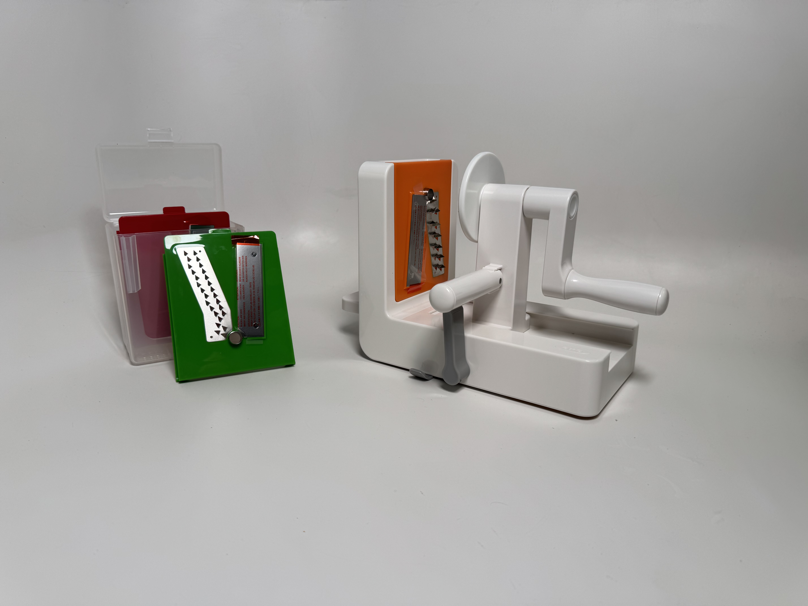
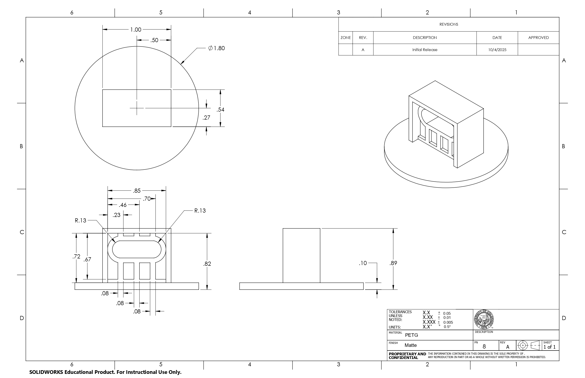
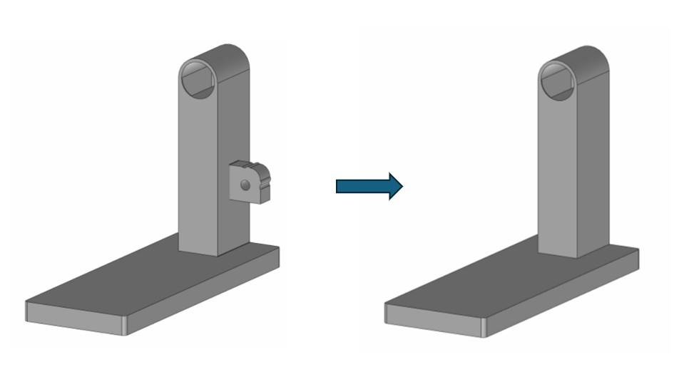

Decomposing vegetable spriralizer to identify manufacturing methods and part efficency through systematic analysis, culminating in design improvement proposals.

The OXO Good Grips Tabletop Spiralizer, affectionately known as the Noodler, is a suction-mounted device that cuts vegetables into spaghetti, fettuccine, or ribbon 'noodle' shapes. This project reverse-engineered the Noodler to gain in-depth understanding of the design and manufacturing decisions behind a currently available market product. Through systematic decomposition, individual component modeling, and function investigation, the team identified and proposed cost-reduction and design improvement opportunities.
Complete disassembly revealed 44 individual components across four subsystems: main body, suction mechanism, slider, and cutting assembly. The team collectively modeled every part through SolidWorks. Patent research illuminated historical development of mechanical vegetable slicing and design choices. Design for Assembly analysis calculated initial part efficiency at 56.8%, below the 60% ideal, with excessive fasteners and difficult suction assemblies identified as primary inefficiencies.
The team proposed three redesigns: converting holes to open slots for easier suction assembly, integrating snap-fit features to main body components for part and fastener elimination, and eliminating an underutilized 'push arm'. These improvements would cut assembly time and reduce practical minimum parts while maintaining spiralizer functionality.


Not all of the proposed redesigns were entirely feasible with the proposed manufacturing methods, which was illuminated later in the course. The project was excellent practice in SolidWorks, making drawings, and working with a primarily engineering team in an engineer's capacity. My design skills were useful in the redesign portion and were strengthened through the questions and iteration pursued by the team.